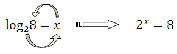

Obliczanie logarytmów
W poniższym nagraniu wideo dokładnie omawiam metodę liczenia logarytmów.
W tym nagraniu wideo omawiam najważniejsze wiadomości dotyczące
logarytmów.
Pokazuję
najprostszą metodę obliczania logarytmów, omawiam wszystkie
najważniejsze wzory związane z logarytmami,
dziedzinę logarytmu oraz
równania i
nierówności logarytmiczne.
Czas nagrania: 67 min.
Metoda liczenia logarytmów
Przypuśćmy, że musimy obliczyć \(\log_{a}\!b\). Wynik takiego
działania oznaczamy sobie przez \(x\).
Zatem mamy:
\[\log_{a}\!b=x\] Zgodnie z definicją
logarytmu możemy teraz przekształcić to równanie na następujące: \[a^x=b\] Teraz z otrzymanego
równania wyliczamy liczbę \(x\).
Na pierwszy rzut oka powyższa metoda może wydawać się skomplikowana, jednak w
rzeczywistości jest bardzo prosta w zastosowaniu. W zamieszczonym wcześniej nagraniu wideo pokazuję
jej działanie na prostych przykładach.
W celu jeszcze lepszego zapamiętania definicji
logarytmu możesz spojrzeć na poniższą
metodę kółka.
Pozwala ona łatwo zapamiętać, jak
przeformułować problem obliczenia logarytmu, na problem znalezienia odpowiedniej potęgi. Zilustrujemy ją
na prostym przykładzie:
 Zaczynamy od
dolnej dwójki, następnie idziemy do \(x\), a na koniec do dużej \(8\). Otrzymujemy w ten sposób ciąg
liczb: \(2, x, 8\), które następnie zapisujemy w postaci potęgi.
Oblicz \( \log_{5}5 \).
\(1\)
Oblicz \( \log_{7}1 \).
\(0\)
Oblicz \( \log_{\frac{1}{3}}81 \).
\(-4\)
Oblicz \( \log_{2}\frac{1}{64} \).
\(-6\)
Oblicz \( \log_{\frac{1}{4}}\!\frac{1}{2} \).
\(\frac{1}{2}\)
Oblicz \( \log_{\sqrt{2}}\! 8 \).
\(6\)
Oblicz \( \log_{5}\! \sqrt[3]{5} \).
\(\frac{1}{3}\)
Oblicz \( \log_{\sqrt{5}}\! \sqrt[3]{5} \).
\(\frac{2}{3}\)
Oblicz \( \log_{\frac{1}{5}}\! \sqrt[7]{5} \).
\(-\frac{1}{7}\)
Oblicz \( \log_{2\sqrt{2}}\! 16 \).
\(\frac{8}{3}\)
Oblicz \( \log_{\sqrt[3]{3}}\! 9\sqrt{3} \).
\(\frac{15}{2}\)
Oblicz \( \log_{\frac{1}{2}}\! 16\sqrt[3]{2} \).
\(-\frac{13}{3}\)
Oblicz \( \log_{5}\! 125\sqrt{5} \).
\(\frac{7}{2}\)
Oblicz \( \log_{\frac{1}{6}}\! 36\sqrt[4]{6} \).
\(-\frac{9}{4}\)
Oblicz \( \log_{3\sqrt{3}}\! 81\sqrt[3]{3} \).
\(\frac{26}{9}\)
Oblicz \( \log_{\frac{1}{2}}\! \frac{256\sqrt{2}}{\sqrt[3]{2}} \).
\(-8\frac{1}{6}\)
Oblicz \( \log_{\frac{1}{3}}\! \frac{81\sqrt[5]{3}}{\sqrt[4]{3}} \).
\(-3\frac{19}{20}\)
Oblicz \( \log_{5}\! \frac{25\sqrt[3]{5}}{\sqrt[4]{125}} \).
\(1\frac{7}{12}\)
Oblicz \( \log_{\frac{1}{4}}\! \frac{2\sqrt[5]{64}}{\sqrt[3]{8}} \).
\(-\frac{3}{5}\)
Oblicz \( \log_{6}\! \frac{\sqrt[3]{36}}{216} \).
\(-\frac{7}{3}\)
Liczba
\(2\log_{\frac{1}{5}}\! 125\) jest równa
A.\( 6 \)
B.\( -3 \)
C.\( 3 \)
D.\( -6 \)
D
Iloczyn \( 2\cdot \log_{\frac{1}{3}}9 \) jest równy
A.\(-6 \)
B.\(-4 \)
C.\(-1 \)
D.\(1 \)
B
Liczba
\(2\log_3 27 - \log_2 16\) jest równa
A.\(2 \)
B.\(-8 \)
C.\(9 \)
D.\(\frac{3}{2} \)
A
Liczba \(\log_{3}\frac{1}{27}\) jest równa
A.\( -3 \)
B.\( -\frac{1}{3} \)
C.\( \frac{1}{3} \)
D.\( 3 \)
A
Liczba
\(\log_2 4 + 2\log_3 1\) jest równa
A.\( 0 \)
B.\( 1 \)
C.\( 2 \)
D.\( 4 \)
C
Liczba \( \left ( \log_{\sqrt{3}}3\sqrt{3} \right )^4 \) jest równa
A.\(12 \)
B.\(6 \)
C.\(9 \)
D.\(81 \)
D
Suma \( \log_8 16+1 \) jest równa
A.\(\log_8 17 \)
B.\(\frac{3}{2} \)
C.\(\frac{7}{3} \)
D.\(3 \)
C
Liczba \( c=\log_{3}2 \). Wtedy
A.\(c^3=2 \)
B.\(3^c=2 \)
C.\(3^2=c \)
D.\(c^2=3 \)
B
Liczba \(\log_\sqrt{7}7\) jest równa
A.\( 2 \)
B.\( 7 \)
C.\( \sqrt{7} \)
D.\( \frac{1}{2} \)
A